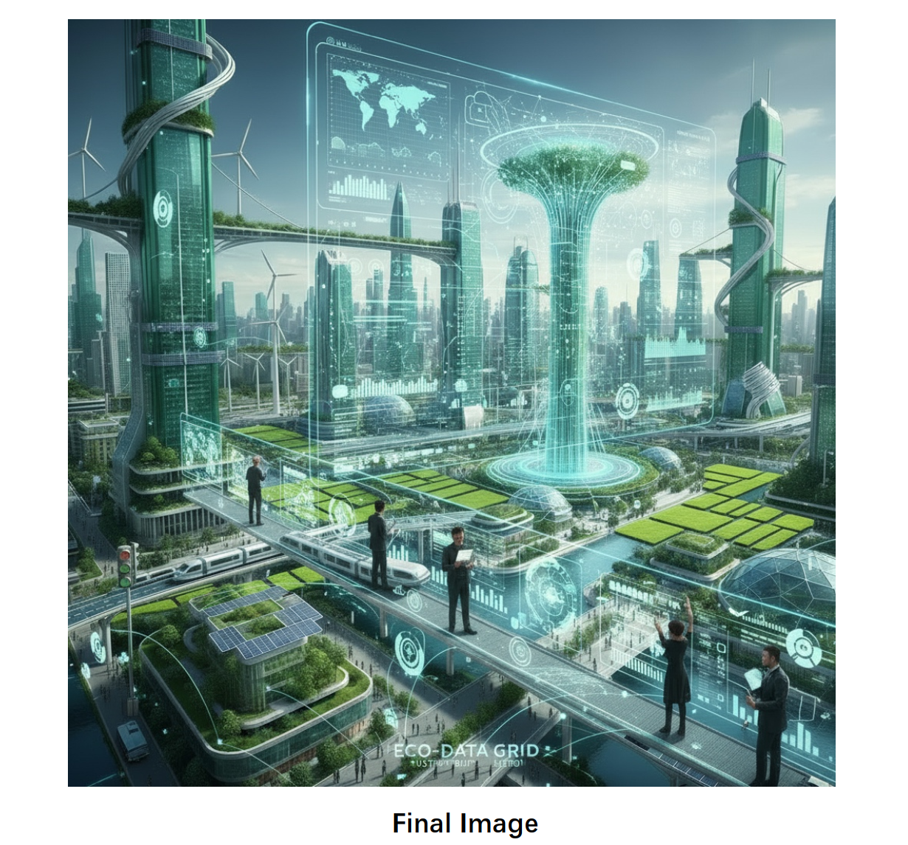

香港大学 The University of Hong Kong
本科 Undergraduate 2023.09 — 2027.06相关课程：Coursework: 商业分析Business Analytics 信息系统分析与设计IS Analysis & Design 信息系统管理IS Management 统计分析Statistical Analysis 中英笔译及口译EN-CN Translation
你好，我是 Hello, I'm
这是一个模拟 AI 对话框 —— 点下方任一关键词填入，再按发送，我就会回复你。 A mock AI chat — pick a chip below to fill the box, then hit send for a reply.
👋 嗨，先点下面任一关键词，再选 Search 或 Think，最后按右边的发送按钮 →
👋 Pick a chip below, choose Search or Think, then hit send →
* 这是基于固定提示词的本地模拟，不会真的调用大模型 API。点关键词填入，再按发送按钮即可。 * Local simulation with predefined answers — no real LLM API call. Pick a chip, then click send.
相关课程：Coursework: 商业分析Business Analytics 信息系统分析与设计IS Analysis & Design 信息系统管理IS Management 统计分析Statistical Analysis 中英笔译及口译EN-CN Translation
产品开发与实施实习生（信息技术部） Product Development & Implementation Intern (IT Dept.)
项目经理助理实习生 Project Manager Assistant Intern



如果你正在寻找具备数据分析能力与产品思维的年轻人，欢迎随时联系我，期待加入你的团队！ If you're looking for a young talent with data analytics skills and product thinking, feel free to reach out — I'd love to join your team!